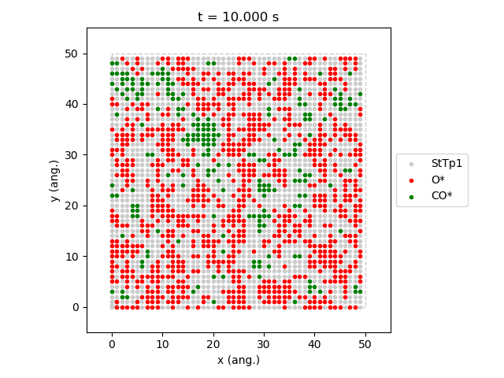
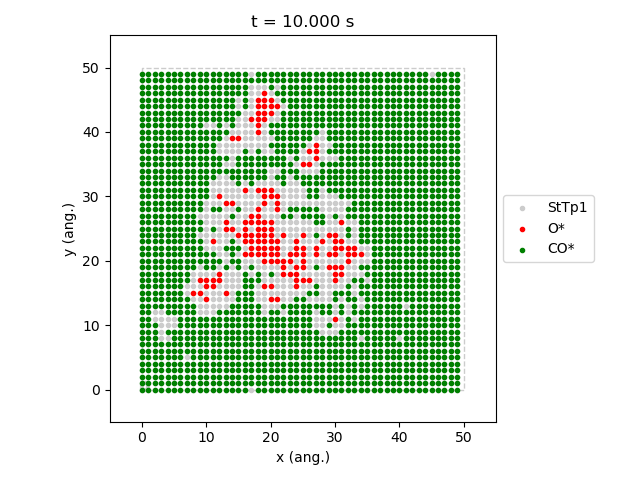
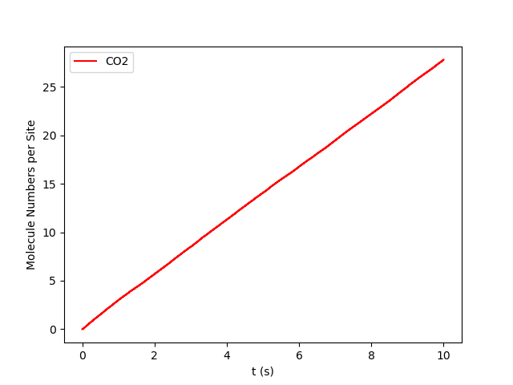
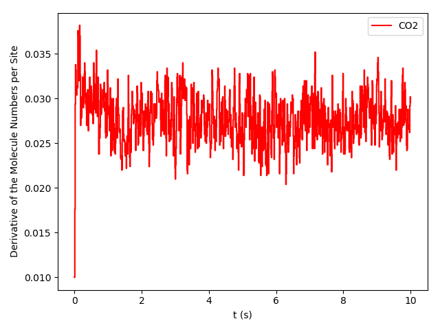
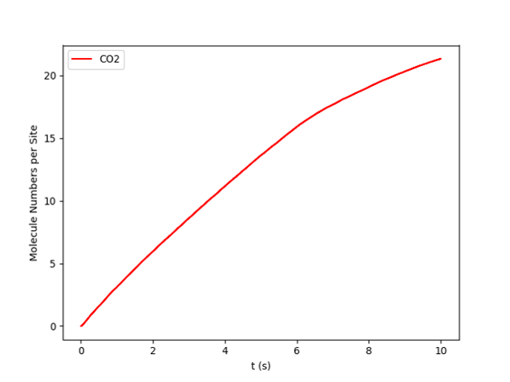
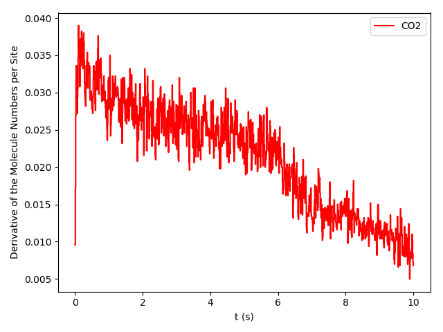

Phase Transitions in the ZGB model.¶
This example is inspired in the seminal paper: Kinetic Phase Transitions in an Irreversible Surface-Reaction Model by Robert M. Ziff, Erdagon Gulari, and Yoav Barshad in 1986 (Phys. Rev. Lett. 56, 25). This paper is the origin of the ZGB model we have been discussing above. While the model leaves out many important steps of the real system, it exhibits interesting steady-state off-equilibrium behavior and two types of phase transitions, which actually occur in real systems. Please refer to the original paper for more details. In this example, we will analyze the effect of changing the composition of the gas phase, namely partial pressures for O2 and CO, in the CO2 Turnover frequency (TOF).
You can download the full example script following this link ZiffGulariBarshad-PhaseTransitions.py.
The first part of the script consists of the definition of the system (see code). Species, lattice, cluster expansion, and mechanisms are defined. This is identical to the use case system described along the Components overview section. Thus, please refer to this section for details.
1 2 3 4 5 6 7 8 9 10 11 12 13 14 15 16 17 18 19 20 21 22 23 24 25 26 27 28 29 30 31 32 33 34 35 36 37 38 39 40 41 42 | # Gas-species:
CO_gas = pz.Species("CO")
O2_gas = pz.Species("O2")
CO2_gas = pz.Species("CO2", gas_energy=-2.337)
# Surface species:
s0 = pz.Species("*", 1)
CO_ads = pz.Species("CO*", 1)
O_ads = pz.Species("O*", 1)
# Lattice setup:
lattice = pz.Lattice( lattice_type=pz.Lattice.RECTANGULAR,
lattice_constant=1.0, repeat_cell=[50,50] )
# Cluster Expansion:
CO_point = pz.Cluster(species=[CO_ads], cluster_energy=-1.3)
O_point = pz.Cluster(species=[O_ads], cluster_energy=-2.3)
cluster_expansion = [CO_point, O_point]
# Mechanism:
CO_adsorption = pz.ElementaryReaction(initial=[s0,CO_gas],
final=[CO_ads],
reversible=False,
pre_expon=10.0,
activation_energy=0.0)
O2_adsorption = pz.ElementaryReaction(initial=[s0,s0,O2_gas],
final=[O_ads,O_ads],
neighboring=[(0, 1)],
reversible=False,
pre_expon=2.5,
activation_energy=0.0)
CO_oxidation = pz.ElementaryReaction(initial=[CO_ads, O_ads],
final=[s0, s0, CO2_gas],
neighboring=[(0, 1)],
reversible=False,
pre_expon=1.0e+20,
activation_energy=0.0)
mechanism = [CO_adsorption, O2_adsorption, CO_oxidation]
|
The second part corresponds to the calculations settings (see code). It starts with the line scm.pyzacros.init(), which initializes the pyZacros and PLAMS environment. Then, in lines 3 to 7, we configure the parallel execution of the calculations. These lines mean running as many zacros jobs simultaneously as many CPUs are on the system. In particular, line 6 establishes that only one processor will be used for each zacros instance. Lines 9 to 18 are fundamentally the same used in the use case system described along the Components overview section. Thus, please refer to this section for details.
1 2 3 4 5 6 7 8 9 10 11 12 13 14 15 16 17 18 | scm.pyzacros.init()
# Parallel Settings: Run as many job simultaneously as there are cpu on the system
maxjobs = multiprocessing.cpu_count()
scm.plams.config.default_jobrunner = scm.plams.JobRunner(parallel=True, maxjobs=maxjobs)
scm.plams.config.job.runscript.nproc = 1
print('Running up to {} jobs in parallel simultaneously'.format(maxjobs))
# Calculation Settings:
sett = pz.Settings()
sett.molar_fraction.CO = 0.45
sett.molar_fraction.O2 = 0.55
sett.random_seed = 953129
sett.temperature = 500.0
sett.pressure = 1.0
sett.snapshots = ('time', 0.5)
sett.species_numbers = ('time', 0.01)
sett.max_time = 10.0
|
The next block executes the zacros calculations (see code). Lines 1-2 define the grid of partial pressures of CO to study. In this case, from 0.2 up to 0.8. Line 4 defines the results list, initially empty. From lines 5 up to 14, we have the loop that submits one zacros calculation for each value of CO partial pressure. First, we establish the composition in the settings object by selecting the partial pressure of CO and O2 (sett.molar_fraction.CO and sett.molar_fraction.O2 respectively. Notice that we assumed that the gas phase is composed only of CO and O2. Thus, xCO`+x:sub:`O_2`=1). Lines 9 to 12 initialize the ZacrosJob, and line 14 collects the corresponding results into the ``results` list. job.run() will return a ZacrosResults object. The full loop will execute all jobs in groups of maxjobs jobs.
1 2 3 4 5 6 7 8 9 10 11 12 13 14 | dx = 0.01
x_CO = numpy.arange(0.2,0.8,dx)
results = []
for x in x_CO:
sett.molar_fraction.CO = x
sett.molar_fraction.O2 = 1.0-x
job = pz.ZacrosJob( settings=sett,
lattice=lattice,
mechanism=mechanism,
cluster_expansion=cluster_expansion )
results.append( job.run() )
|
Now we move to analyze the results (see code). Lines 1 to 3 defines vectors to store important results. Specifically, the average coverage of O and CO species on the surface (cf_O and cf_CO respectively) and the turnover frequency (TOF) of CO2 (TOF_CO2). The loop starting at line 5 fill these vectors by iterating through each element of x_CO. Line 6 is crucial because it forces to wait for the job to finish and checks if the status is successful. Only if both conditions are successful can it proceed to access the results.
Lines 5 to 11, calculate the coverage fractions using the last five lattice states, and line 13 calculates the TOFs by utilizing the function get_TOFs(). Roughly, the TOF is the slope of the regression line for the number of molecules produced as a function of time (we will go in deeper about this concept in the next example). Lines 15 to 17 just save the calculated values into the results vectors, and line 19 waits for all threads to finish and clean the pyZacros and PLAMS environment. Finally, lines 21 to 26 print the results nicely to standard output.
1 2 3 4 5 6 7 8 9 10 11 12 13 14 15 16 17 18 19 20 21 22 23 24 25 26 | cf_O = []
cf_CO = []
TOF_CO2 = []
for i,x in enumerate(x_CO):
if( results[i].ok() ):
acf = { "O*":0.0, "CO*":0.0 }
for lattice_state in results[i].lattice_states(last=5):
fractions = lattice_state.coverage_fractions()
acf["O*"] += fractions["O*"]/5
acf["CO*"] += fractions["CO*"]/5
TOFs,_,_ = results[i].get_TOFs()
cf_O.append( acf["O*"] )
cf_CO.append( acf["CO*"] )
TOF_CO2.append( TOFs["CO2"] )
scm.pyzacros.finish()
print("----------------------------------------------")
print("%4s"%"cond", "%8s"%"x_CO", "%10s"%"acf_O", "%10s"%"acf_CO", "%10s"%"TOF_CO2")
print("----------------------------------------------")
for i,x in enumerate(x_CO):
print("%4d"%i,"%8.2f"%x_CO[i],"%10.6f"%cf_O[i],"%10.6f"%cf_CO[i],"%10.6f"%TOF_CO2[i])
|
If the script work successfully, you would see the following output:
1 2 3 4 5 6 7 8 9 10 11 12 13 14 15 16 17 18 19 20 21 22 23 24 25 26 27 28 29 30 31 32 33 34 35 36 37 38 39 40 41 42 43 44 45 46 47 48 49 50 51 52 53 54 55 56 57 58 59 60 61 62 63 64 65 66 67 68 69 70 71 72 73 74 75 76 77 78 79 80 81 82 83 84 85 86 87 | $ amspython ZiffGulariBarshad-PhaseTransitions.py
[26.11|12:15:51] PLAMS working folder: /home/user/pyzacros/examples/plams_workdir
Running up to 8 jobs in parallel simultaneously
[26.11|12:15:51] JOB plamsjob STARTED
[26.11|12:15:51] JOB plamsjob STARTED
[26.11|12:15:51] Renaming job plamsjob to plamsjob.002
[26.11|12:15:51] JOB plamsjob STARTED
[26.11|12:15:51] Renaming job plamsjob to plamsjob.003
[26.11|12:15:51] JOB plamsjob STARTED
[26.11|12:15:51] JOB plamsjob RUNNING
[26.11|12:15:51] Renaming job plamsjob to plamsjob.004
[26.11|12:15:51] JOB plamsjob STARTED
[26.11|12:15:51] JOB plamsjob.002 RUNNING
...
[26.11|12:16:08] JOB plamsjob.057 SUCCESSFUL
[26.11|12:16:08] JOB plamsjob.056 SUCCESSFUL
[26.11|12:16:08] JOB plamsjob.058 SUCCESSFUL
[26.11|12:16:08] JOB plamsjob.059 SUCCESSFUL
[26.11|12:16:09] JOB plamsjob.060 SUCCESSFUL
[26.11|12:16:09] JOB plamsjob.061 SUCCESSFUL
[26.11|12:16:09] JOB plamsjob.062 SUCCESSFUL
[26.11|12:39:42] PLAMS run finished. Goodbye
-----------------------------------------
x_CO acf_O acf_CO TOF_CO2
-----------------------------------------
0.20 0.998000 0.000000 0.040744
0.21 0.999520 0.000000 0.036692
0.22 1.000000 0.000000 0.042709
0.23 0.998400 0.000000 0.041491
0.24 0.997360 0.000000 0.051405
0.25 0.993360 0.000000 0.074524
0.26 0.998400 0.000000 0.059448
0.27 0.997280 0.000000 0.075712
0.28 0.997440 0.000000 0.085320
0.29 0.993440 0.000080 0.102368
0.30 0.993120 0.000000 0.114813
0.31 0.995040 0.000000 0.120510
0.32 0.991120 0.000000 0.150822
0.33 0.988640 0.000000 0.150280
0.34 0.986640 0.000000 0.210519
0.35 0.974160 0.000080 0.266200
0.36 0.961360 0.000240 0.301795
0.37 0.956160 0.000320 0.341076
0.38 0.933280 0.000400 0.383555
0.39 0.925680 0.000320 0.511855
0.40 0.897760 0.000880 0.551203
0.41 0.862640 0.002160 0.619353
0.42 0.867040 0.001280 0.737965
0.43 0.820560 0.001680 0.881659
0.44 0.815760 0.002160 0.979467
0.45 0.743920 0.003680 1.266927
0.46 0.719840 0.006320 1.311960
0.47 0.653200 0.011520 1.495406
0.48 0.648240 0.009360 1.712626
0.49 0.602320 0.016240 1.847959
0.50 0.561440 0.020480 2.107661
0.51 0.540320 0.025440 2.248969
0.52 0.450880 0.057120 2.500418
0.53 0.396160 0.078080 2.759625
0.54 0.073440 0.708800 2.168947
0.55 0.019040 0.896560 1.873619
0.56 0.000000 0.998720 0.879270
0.57 0.000000 1.000000 0.358375
0.58 0.000000 1.000000 0.225387
0.59 0.000000 1.000000 0.148030
0.60 0.000000 1.000000 0.132571
0.61 0.000000 1.000000 0.085284
0.62 0.000000 1.000000 0.064224
0.63 0.000000 1.000000 0.040768
0.64 0.000000 1.000000 0.036527
0.65 0.000000 1.000000 0.029231
0.66 0.000000 1.000000 0.028916
0.67 0.000000 1.000000 0.022165
0.68 0.000000 1.000000 0.015293
0.69 0.000000 1.000000 0.012087
0.70 0.000000 1.000000 0.011946
0.71 0.000000 1.000000 0.010444
0.72 0.000000 1.000000 0.007646
0.73 0.000000 1.000000 0.006830
0.74 0.000000 1.000000 0.006555
0.75 0.000000 1.000000 0.004735
0.76 0.000000 1.000000 0.004933
0.77 0.000000 1.000000 0.003422
0.78 0.000000 1.000000 0.002669
0.79 0.000000 1.000000 0.003086
0.80 0.000000 1.000000 0.002969
0.81 0.000000 1.000000 0.002624
|
The above results are the final aim of the calculation. However, one can take advantage of python libraries to visualize them. Here, we use matplotlib. Please check the matplotlib documentation for more details at https://matplotlib.org. The following lines of code allow visualizing the effect of changing the CO partial pressure on the average coverage of O and CO and the production rate of CO2.
1 2 3 4 5 6 7 8 9 10 11 12 13 14 15 16 17 | # Coverage and TOF plot
fig = plt.figure()
ax = plt.axes()
ax.set_xlabel('Partial Pressure CO', fontsize=14)
ax.set_ylabel("Coverage Fraction (%)", color="blue", fontsize=14)
ax.plot(x_CO, cf_O, color="blue", linestyle="-.", lw=2, zorder=1)
ax.plot(x_CO, cf_CO, color="blue", linestyle="-", lw=2, zorder=2)
plt.text(0.3, 0.9, 'O', fontsize=18, color="blue")
plt.text(0.7, 0.9, 'CO', fontsize=18, color="blue")
ax2 = ax.twinx()
ax2.set_ylabel("TOF (mol/s/site)",color="red", fontsize=14)
ax2.plot(x_CO, TOF_CO2, color="red", lw=2, zorder=5)
plt.text(0.37, 1.5, 'CO$_2$', fontsize=18, color="red")
plt.show()
|
{kind=link}
This model assumes that when gas-phase molecules of CO and O2 are adsorbed immediately on empty sites, and when the 0 and CO occupy adjacent sites, they react immediately. This model is intrinsically irreversible because the molecules are sticky to their original sites and remain stationary until they are removed by a reaction. The last figure shows three regions:
- Oxygen poisoned state, xCO <0.32.
- Reactive state 0.32<xCO <0.55.
- CO poisoned state xCO >0.55.
The first transition at xCO =0.32 is continuous, and therefore it is of the second order. The second transition at xCO =0.55 occurs abruptly, implying that this is of a first-order transition. As you increase the KMC simulation time, the transition becomes more abrupt. We will discuss this effect in the next example.
pyZacros also offers some predefined plot functions that use matplotlib as well. For example, it is possible to see a typical reactive state configuration (xCO =0.54) and one in the process of being poisoned by CO (xCO =0.55). Just get the last lattice state with the last_lattice_state() function and visualize it with plot(). See the code and figures below. The state at xCO =0.54 is a prototypical steady-state, contrary to the one at xCO =0.55, which is otherwise a good example where we can see the two phases coexisting.
1 2 3 | # Lattice states for x_CO=0.54 and CO=0.55
results[33].last_lattice_state().plot()
results[34].last_lattice_state().plot()
|
|  |  |
|---|---|
| A view of the catalyst surface at partial pressure of CO = 0.54. Steady-state. |
A view of the catalyst surface at partial pressure of CO = 0.55. Non-steady-state. |
{kind=link}
{kind=link}
In the previous paragraph, we introduced the concept of steady-state. However, let’s define it slightly more formally. For our study system, the steady-state for a given composition is characterized when the derivative of the CO2 production (TOF) with respect to time is zero and remains so:
pyZacros also offers the function plot_molecule_numbers() to visualize the molecule numbers and its first derivative as a function of time. See code and figures below:
1 2 3 4 5 6 7 | # Molecule numbers for x_CO=0.54 and CO=0.55
results[33].plot_molecule_numbers( ["CO2"], normalize_per_site=True )
results[34].plot_molecule_numbers( ["CO2"], normalize_per_site=True )
# First Derivative. Molecule numbers for x_CO=0.54 and CO=0.55
results[33].plot_molecule_numbers( ["CO2"], normalize_per_site=True, derivative=True )
results[34].plot_molecule_numbers( ["CO2"], normalize_per_site=True, derivative=True )
|
|   |
  |
|---|---|
| A view of the catalyst surface at partial pressure of CO = 0.54 |
A view of the catalyst surface at partial pressure of CO = 0.55 |
{kind=link}
{kind=link}
{kind=link}
{kind=link}
From the figures above, it is clear that we have reached a steady-state for xCO =0.54 we have reached a steady state. Notice that the first derivative is approximately constant at 0.027 mol/s/site within a tolerance of 0.05. mol/s/site. Contrary, this is not the case of xCO =0.55, where the first derivative is continuously going down.
In the next example, we will modify the script presented here to reach a steady-state configuration for every composition.